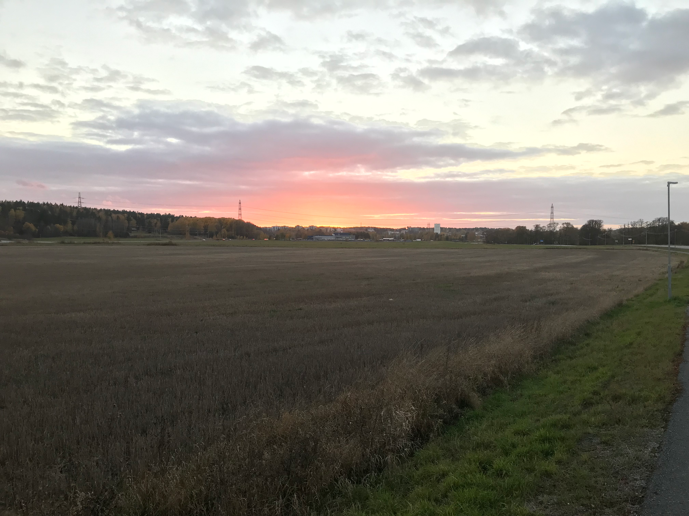
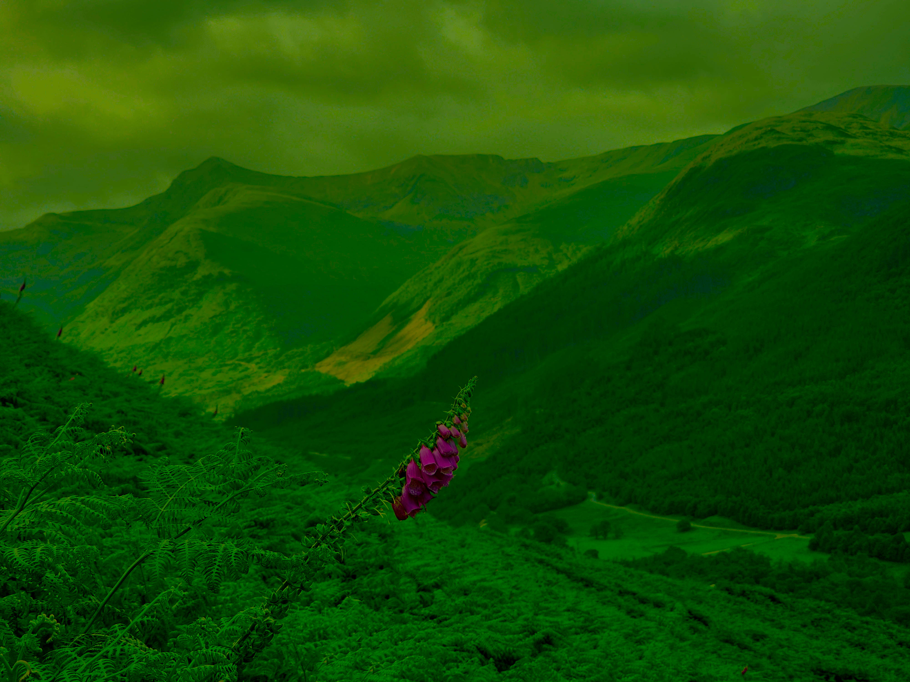
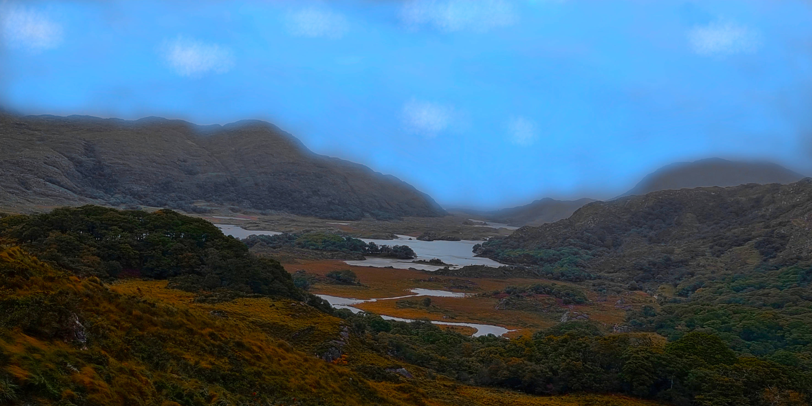
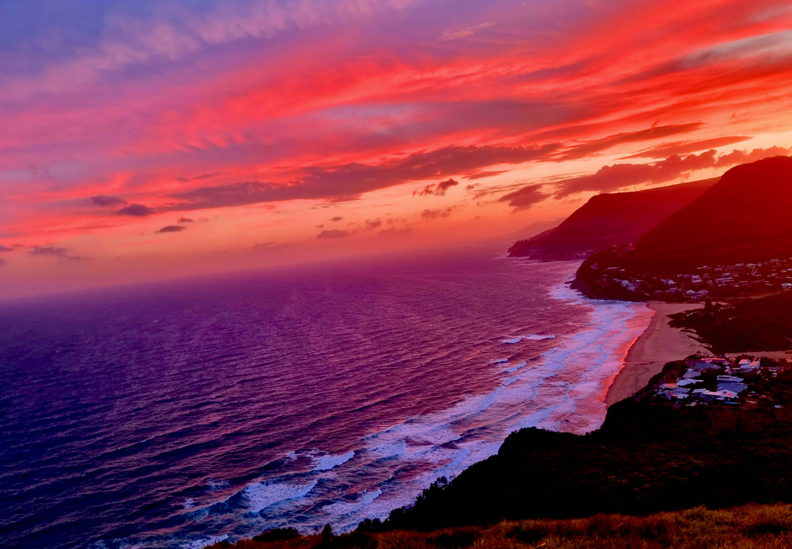

Varför existerar denna hemsida?
Denna sida existerar p.g.a laboration 1.2 inom grafisk teknik för webb. Syftet med uppgiften var att redigera bilder med bildbehandlingsprogram, samt att skapa logotyper/ikoner och en hero-bild. Dessa bilder skulle sen tillämpas på en hemsida. För denna laboration har jag använt GIMP för att redigera bilderna för bildgalleriet. Logotypen skapades med Inkscape som en vektoriserad bild s.k svg. Ikonerna som kallas favicon skapades från logotypen med en sida som heter RealFaviconGenerator.